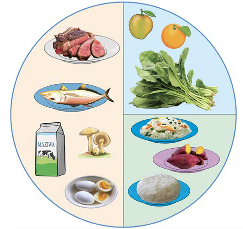

Mlo kamili kwa makundi mbalimbali ya watu
Mahitaji ya vyakula ni tofauti kwa kila kundi la watu. Makundi haya hutofautiana kulingana na umri kama vile watoto, vijanabalehe na wazee. Vilevile, aina ya kazi wanazofanya kama vile watu wanaofanya kazi za nguvu nyingi na hali za kiafya kama vile wagonjwa.
Watoto
Watoto ni kundi la watu waliopo katika kipindi cha ukuaji wa kasi. Kwa kuwa wapo katika kipindi hicho muhimu wanahitaji vyakula vya kujenga mwili kwa wingi. Vyakula hivyo ni kama vile maziwa, nyama, samaki, maharage, njegere, kunde na mayai. Vyakula hivyo husaidia kujenga mwili wa mtoto, kuimarisha kinga ya mwili pamoja na ubongo. Vilevile, watoto wanahitaji vyakula vya kuupa mwili nguvu. Vyakula hivyo huwawezesha kupata nguvu za kucheza michezo mbalimbali na kufanya shughuli wanazozimudu. Aidha, watoto wanahitaji vyakula vya kulinda mwili ili kujenga kinga ya miili yao dhidi ya magonjwa. Kielelezo namba 6 kinaonesha mlo kamili wa mtoto.

Maelezo ya picha: Mchoro wa mlo kamili wa mtoto uliogawanywa katika makundi matatu. Kushoto kuna vyakula vya kujenga mwili: nyama, samaki, maziwa, uyoga na mayai. Juu kulia kuna vyakula vya kulinda mwili: embe, chungwa na mboga za majani. Chini kulia kuna vyakula vya kuupa mwili nguvu: wali, viazi vitamu na ugali.